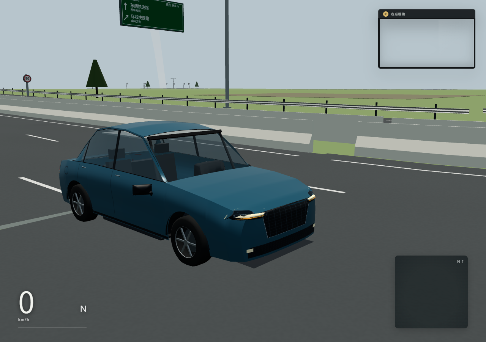
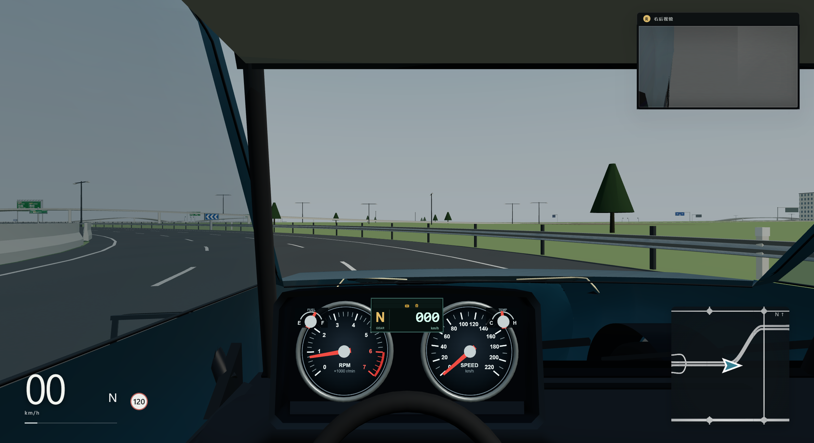

Round 5 · 全地图统一生成
3,290 条道路、306 个路口使用统一生成器。下方道路负载对照采用相同相机、材质和路线的车辆物理模型；完整车辆与驾驶界面由独立的实际游戏入口核对。离屏目标 60 Hz，记录不作为显示器实际 FPS。
实施、数量、性能与遗留问题报告 · 原始结果汇总 · 7 处保留的桥墩/建筑冲突
实际游戏入口 · city-main / family-sedan
通过正常 StartupApplication 和 DrivingGame 进入驾驶界面；退出后资源释放已检查。

正式发布入口检查
BasicValidation 正式包已从菜单进入城区驾驶，以下截图已查看。入口记录 同时保留检查工具关闭时未写完最终状态的限制，不计作全自动通过。
